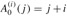
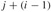
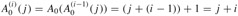
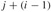
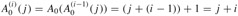

|
|
< Day Day Up > |
|
As noted in Section 21.3, the running time of the combined union-by-rank and path-compression heuristic is O(m α (n)) for m disjoint-set operations on n elements. In this section, we shall examine the function α to see just how slowly it grows. Then we prove this running time using the potential method of amortized analysis.
For integers k ≥ 0 and j ≥ 1, we define the function Ak(j) as
where the expression uses the functional-iteration notation given in Section 3.2. Specifically, and for i ≥ 1. We will refer to the parameter k as the level of the function A.
The function Ak(j) strictly increases with both j and k. To see just how quickly this function grows, we first obtain closed-form expressions for A1(j) and A2(j).
For any integer j ≥ 1, we have A1(j) = 2 j + 1.
Proof We first use induction on i to show that . For the base case, we have . For the inductive step, assume that  . Then . Finally, we note that .
. Then . Finally, we note that .
For any integer j ≥ 1, we have A2(j) = 2j+1(j + 1) - 1.
Proof We first use induction on i to show that . For the base case, we have . For the inductive step, assume that . Then . Finally, we note that .
Now we can see how quickly Ak(j) grows by simply examining Ak (1) for levels k = 0, 1, 2, 3, 4. From the definition of A0(k) and the above lemmas, we have A0(1) = 1 + 1 = 2, A1(1) = 2 · 1 + 1 = 3, and A2(1) = 21+1 · (1 + 1) - 1 = 7. We also have
|
A3(1) |
= |
|
|
= |
A2(A2(1)) |
|
|
= |
A2(7) |
|
|
= |
28 · 8 - 1 |
|
|
= |
211 - 1 |
|
|
= |
2047 |
and
which is the estimated number of atoms in the observable universe.
We define the inverse of the function Ak (n), for integer n ≥ 0, by
α(n) = min {k : Ak(1) = n} .
In words, α(n) is the lowest level k for which Ak(1) is at least n. From the above values of Ak(1), we see that
It is only for impractically large values of n (greater than A4(1), a huge number) that α(n) > 4, and so α(n) ≤ 4 for all practical purposes.
In the remainder of this section, we prove an O(m α(n)) bound on the running time of the disjoint-set operations with union by rank and path compression. In order to prove this bound, we first prove some simple properties of ranks.
For all nodes x, we have rank[x] ≤ rank[p[x]], with strict inequality if x ≠ p[x]. The value of rank[x] is initially 0 and increases through time until x ≠ p[x]; from then on, rank[x] does not change. The value of rank[p[x]] monotonically increases over time.
Proof The proof is a straightforward induction on the number of operations, using the implementations of MAKE-SET, UNION, and FIND-SET that appear in Section 21.3. We leave it as Exercise 21.4-1.
Every node has rank at most n - 1.
Proof Each node's rank starts at 0, and it increases only upon LINK operations. Because there are at most n - 1 UNION operations, there are also at most n - 1 LINK operations. Because each LINK operation either leaves all ranks alone or increases some node's rank by 1, all ranks are at most n - 1.
Lemma 21.6 provides a weak bound on ranks. In fact, every node has rank at most ⌊lg n⌋ (see Exercise 21.4-2). The looser bound of Lemma 21.6 will suffice for our purposes, however.
We shall use the potential method of amortized analysis (see Section 17.3) to prove the O(mα(n)) time bound. In performing the amortized analysis, it is convenient to assume that we invoke the LINK operation rather than the UNION operation. That is, since the parameters of the LINK procedure are pointers to two roots, we assume that the appropriate FIND-SET operations are performed separately. The following lemma shows that even if we count the extra FIND-SET operations induced by UNION calls, the asymptotic running time remains unchanged.
Suppose we convert a sequence S' of m' MAKE-SET, UNION, and FIND-SET operations into a sequence S of m MAKE-SET, LINK, and FIND-SET operations by turning each UNION into two FIND-SET operations followed by a LINK. Then, if sequence S runs in O(m α(n)) time, sequence S' runs in O(m' α(n)) time.
Proof Since each UNION operation in sequence S' is converted into three operations in S, we have m' ≤ m ≤ 3m'. Since m = O(m'), an O(m α(n)) time bound for the converted sequence S implies an O(m' α(n)) time bound for the original sequence S'.
In the remainder of this section, we shall assume that the initial sequence of m' MAKE-SET, UNION, and FIND-SET operations has been converted to a sequence of m MAKE-SET, LINK, and FIND-SET operations. We now prove an O(m α(n)) time bound for the converted sequence and appeal to Lemma 21.7 to prove the O(m' α(n)) running time of the original sequence of m' operations.
The potential function we use assigns a potential φq(x) to each node x in the disjoint-set forest after q operations. We sum the node potentials for the potential of the entire forest: Φq = Σxφ (x), where Φq denotes the potential of the forest after q operations. The forest is empty prior to the first operation, and we arbitrarily set Φ0 = 0. No potential Φq will ever be negative.
The value of φq(x) depends on whether x is a tree root after the qth operation. If it is, or if rank[x] = 0, then φq(x) = α(n) · rank[x].
Now suppose that after the qth operation, x is not a root and that rank[x] ≥ 1. We need to define two auxiliary functions on x before we can define φq(x). First we define
level(x) = max {k : rank[p[x]] ≥ Ak (rank[x])} .
That is, level(x) is the greatest level k for which Ak, applied to x's rank, is no greater than x's parent's rank.
We claim that
which we see as follows. We have
|
rank[p[x]] |
≥ |
rank[x] + 1 |
(by Lemma 21.4) |
|
= |
A0(rank[x]) |
(by definition of A0(j)) , |
which implies that level(x) ≥ 0, and we have
|
Aα(n)(rank[x]) |
≥ |
Aα(n)(1) |
(because Ak(j) is strictly increasing) |
|
≥ |
n |
(by the definition of α(n)) |
|
|
> |
rank[p[x]] |
(by Lemma 21.6) , |
which implies that level(x) < α(n). Note that because rank[p[x]] monotonically increases over time, so does level(x).
The second auxiliary function is
That is, iter(x) is the largest number of times we can iteratively apply Alevel(x), applied initially to x's rank, before we get a value greater than x's parent's rank.
We claim that
which we see as follows. We have
which implies that iter(x) ≥ 1, and we have
which implies that iter(x) ≤ rank[x]. Note that because rank[p[x]] monotonically increases over time, in order for iter(x) to decrease, level(x) must increase. As long as level(x) remains unchanged, iter(x) must either increase or remain unchanged.
With these auxiliary functions in place, we are ready to define the potential of node x after q operations:
The next two lemmas give useful properties of node potentials.
For every node x, and for all operation counts q, we have
0 ≤ φq(x) ≤ α(n) · rank[x].
Proof If x is a root or rank[x] = 0, then φq(x) = α(n) · rank[x] by definition. Now suppose that x is not a root and that rank[x] ≥ 1. We obtain a lower bound on φq(x) by maximizing level(x) and iter(x). By the bound (21.1), level(x) ≤ α(n) - 1, and by the bound (21.2), iter(x) ≤ rank[x]. Thus,
|
φq(x) |
≥ |
(α(n) - (α(n) - 1)) · rank[x] - rank[x] |
|
= |
rank[x] - rank[x] |
|
|
= |
0. |
Similarly, we obtain an upper bound on φq(x) by minimizing level(x) and iter(x). By the bound (21.1), level(x) ≥ 0, and by the bound (21.2), iter(x) ≥ 1. Thus,
|
φq(x) |
≤ |
(α(n) - 0) · rank[x] - 1 |
|
= |
α(n) · rank[x] - 1 |
|
|
< |
α(n) · rank[x]. |
We are now ready to examine how the disjoint-set operations affect node potentials. With an understanding of the change in potential due to each operation, we can determine each operation's amortized cost.
Let x be a node that is not a root, and suppose that the qth operation is either a LINK or FIND-SET. Then after the qth operation, φq(x) ≤ φq-1(x). Moreover, if rank[x] ≥ 1 and either level(x) or iter(x) changes due to the qth operation, then φq(x) ≤ φq-1(x) - 1. That is, x's potential cannot increase, and if it has positive rank and either level(x) or iter(x) changes, then x's potential drops by at least 1.
Proof Because x is not a root, the qth operation does not change rank[x], and because n does not change after the initial n MAKE-SET operations, α(n) remains unchanged as well. Hence, these components of the formula for x's potential remain the same after the qth operation. If rank[x] = 0, then φq(x) = φq-1(x) = 0. Now assume that rank[x] ≥ 1.
Recall that level(x) monotonically increases over time. If the qth operation leaves level(x) unchanged, then iter(x) either increases or remains unchanged. If both level(x) and iter(x) are unchanged, then φq(x) = φq-1(x). If level(x) is unchanged and iter(x) increases, then it increases by at least 1, and so φq(x) ≤ φq-1(x) - 1.
Finally, if the qth operation increases level(x), it increases by at least 1, so that the value of the term (α(n) - level(x)) · rank[x] drops by at least rank[x]. Because level(x) increased, the value of iter(x) might drop, but according to the bound (21.2), the drop is by at most rank[x] - 1. Thus, the increase in potential due to the change in iter(x) is less than the decrease in potential due to the change in level(x), and we conclude that φq(x) ≤ φq-1(x) - 1.
Our final three lemmas show that the amortized cost of each MAKE-SET, LINK, and FIND-SET operation is O(α(n)). Recall from equation (17.2) that the amortized cost of each operation is its actual cost plus the increase in potential due to the operation.
The amortized cost of each MAKE-SET operation is O(1).
Proof Suppose that the qth operation is MAKE-SET(x). This operation creates node x with rank 0, so that φq(x) = 0. No other ranks or potentials change, and so Φq = Φq-1. Noting that the actual cost of the MAKE-SET operation is O(1) completes the proof.
The amortized cost of each LINK operation is O(α(n)).
Proof Suppose that the qth operation is LINK(x, y). The actual cost of the LINK operation is O(1). Without loss of generality, suppose that the LINK makes y the parent of x.
To determine the change in potential due to the LINK, we note that the only nodes whose potentials may change are x, y, and the children of y just prior to the operation. We shall show that the only node whose potential can increase due to the LINK is y, and that its increase is at most α(n):
By Lemma 21.9, any node that is y's child just before the LINK cannot have its potential increase due to the LINK.
From the definition of φq(x), we see that, since x was a root just before the qth operation, φq-1(x) = α(n) · rank[x]. If rank[x] = 0, then φq(x) = φq-1(x) = 0. Otherwise,
Because this last quantity is φq-1(x), we see that x's potential decreases.
Because y is a root prior to the LINK, φq-1(y) = α(n) · rank[y]. The LINK operation leaves y as a root, and it either leaves y's rank alone or it increases y's rank by 1. Therefore, either φq(y) = φq-1(y) or φq(y) = φq-1(y) + α(n).
The increase in potential due to the LINK operation, therefore, is at most α(n). The amortized cost of the LINK operation is O(1) + α(n) = O(α(n)).
The amortized cost of each FIND-SET operation is O(α(n)).
Proof Suppose that the qth operation is a FIND-SET and that the find path contains s nodes. The actual cost of the FIND-SET operation is O(s). We shall show that no node's potential increases due to the FIND-SET and that at least max(0, s - (α(n) + 2)) nodes on the find path have their potential decrease by at least 1.
To see that no node's potential increases, we first appeal to Lemma 21.9 for all nodes other than the root. If x is the root, then its potential is α(n) · rank[x], which does not change.
Now we show that at least max(0, s - (α(n) + 2)) nodes have their potential decrease by at least 1. Let x be a node on the find path such that rank[x] > 0 and x is followed somewhere on the find path by another node y that is not a root, where level(y) = level(x) just before the FIND-SET operation. (Node y need not immediately follow x on the find path.) All but at most α(n) + 2 nodes on the find path satisfy these constraints on x. Those that do not satisfy them are the first node on the find path (if it has rank 0), the last node on the path (i.e., the root), and the last node w on the path for which level(w) = k, for each k = 0, 1, 2, ..., α(n) - 1.
Let us fix such a node x, and we shall show that x's potential decreases by at least 1. Let k = level(x) = level(y). Just prior to the path compression caused by the FIND-SET, we have
Putting these inequalities together and letting i be the value of iter(x) before path compression, we have
Because path compression will make x and y have the same parent, we know that after path compression, rank[p[x]] = rank[p[y]] and that the path compression does not decrease rank[p[y]]. Since rank[x] does not change, after path compression we have that . Thus, path compression will cause either iter(x) to increase (to at least i + 1) or level(x) to increase (which occurs if iter(x) increases to at least rank[x] + 1). In either case, by Lemma 21.9, we have φq(x) ≤ φq-1(x) - 1. Hence, x's potential decreases by at least 1.
The amortized cost of the FIND-SET operation is the actual cost plus the change in potential. The actual cost is O(s), and we have shown that the total potential decreases by at least max(0, s - (α(n) + 2)). The amortized cost, therefore, is at most O(s) - (s - (α(n) + 2)) = O(s) - s + O(α(n)) = O(α(n)), since we can scale up the units of potential to dominate the constant hidden in O(s).
Putting the preceding lemmas together yields the following theorem.
A sequence of m MAKE-SET, UNION, and FIND-SET operations, n of which are MAKE-SET operations, can be performed on a disjoint-set forest with union by rank and path compression in worst-case time O(m α(n)).
Proof Immediate from Lemmas 21.7, 21.10, 21.11, and 21.12.
Using Exercise 21.4-2, give a simple proof that operations on a disjoint-set forest with union by rank but without path compression run in O(m lg n) time.
Professor Dante reasons that because node ranks increase strictly along a path to the root, node levels must monotonically increase along the path. In other words, if rank(x) > 0 and p[x] is not a root, then level(x) ≤ level(p[x]). Is the professor correct?
Consider the function α'(n) = min {k : Ak (1) ≥ lg(n + 1)}. Show that α'(n) ≤ 3 for all practical values of n and, using Exercise 21.4-2, show how to modify the potential-function argument to prove that a sequence of m MAKE-SET, UNION, and FIND-SET operations, n of which are MAKE-SET operations, can be performed on a disjoint-set forest with union by rank and path compression in worst-case time O(m α'(n)).
The off-line minimum problem asks us to maintain a dynamic set T of elements from the domain {1, 2, ..., n} under the operations INSERT and EXTRACT-MIN. We are given a sequence S of n INSERT and m EXTRACT-MIN calls, where each key in {1, 2, ..., n} is inserted exactly once. We wish to determine which key is returned by each EXTRACT-MIN call. Specifically, we wish to fill in an array extracted[1 ‥ m], where for i = 1, 2, ..., m, extracted[i] is the key returned by the ith EXTRACT-MIN call. The problem is "off-line" in the sense that we are allowed to process the entire sequence S before determining any of the returned keys.
In the following instance of the off-line minimum problem, each INSERT is represented by a number and each EXTRACT-MIN is represented by the letter E:
4, 8, E, 3, E, 9, 2, 6, E, E, E, 1, 7, E, 5.
Fill in the correct values in the extracted array.
To develop an algorithm for this problem, we break the sequence S into homogeneous subsequences. That is, we represent S by
I1, E, I2, E, I3, ..., Im, E, Im+1,
where each E represents a single EXTRACT-MIN call and each Ij represents a (possibly empty) sequence of INSERT calls. For each subsequence Ij, we initially place the keys inserted by these operations into a set Kj , which is empty if Ij is empty. We then do the following.
OFF-LINE-MINIMUM(m, n) 1 for i ← 1 to n 2 do determine j such that i ∈ Kj 3 if j ≠ m + 1 4 then extracted[j] ← i 5 let l be the smallest value greater than j for which set Kl exists 6 Kl ← Kj ∪ Kl, destroying Kj 7 return extracted
Argue that the array extracted returned by OFF-LINE-MINIMUM is correct.
Describe how to implement OFF-LINE-MINIMUM efficiently with a disjoint-set data structure. Give a tight bound on the worst-case running time of your implementation.
In the depth-determination problem, we maintain a forest of rooted trees under three operations:
MAKE-TREE(v) creates a tree whose only node is v.
FIND-DEPTH(v) returns the depth of node v within its tree.
GRAFT(r, v) makes node r, which is assumed to be the root of a tree, become the child of node v, which is assumed to be in a different tree than r but may or may not itself be a root.
Suppose that we use a tree representation similar to a disjoint-set forest: p[v] is the parent of node v, except that p[v] = v if v is a root. If we implement GRAFT(r, v) by setting p[r] ← v and FIND-DEPTH(v) by following the find path up to the root, returning a count of all nodes other than v encountered, show that the worst-case running time of a sequence of m MAKE-TREE, FIND-DEPTH, and GRAFT operations is Θ(m2).
By using the union-by-rank and path-compression heuristics, we can reduce the worst-case running time. We use the disjoint-set forest , where each set Si (which is itself a tree) corresponds to a tree Ti in the forest . The tree structure within a set Si, however, does not necessarily correspond to that of Ti. In fact, the implementation of Si does not record the exact parent-child relationships but nevertheless allows us to determine any node's depth in Ti.
The key idea is to maintain in each node v a "pseudodistance" d[v], which is defined so that the sum of the pseudodistances along the path from v to the root of its set Si equals the depth of v in Ti. That is, if the path from v to its root in Si is v0, v1, ..., vk, where v0 = v and vk is Si's root, then the depth of v in Ti is .
Give an implementation of MAKE-TREE.
Show how to modify FIND-SET to implement FIND-DEPTH. Your implementation should perform path compression, and its running time should be linear in the length of the find path. Make sure that your implementation updates pseudodistances correctly.
Show how to implement GRAFT(r, v), which combines the sets containing r and v, by modifying the UNION and LINK procedures. Make sure that your implementation updates pseudodistances correctly. Note that the root of a set Si is not necessarily the root of the corresponding tree Ti.
Give a tight bound on the worst-case running time of a sequence of m MAKE-TREE, FIND-DEPTH, and GRAFT operations, n of which are MAKE-TREE operations.
The least common ancestor of two nodes u and v in a rooted tree T is the node w that is an ancestor of both u and v and that has the greatest depth in T. In the off-line least-common-ancestors problem, we are given a rooted tree T and an arbitrary set P = {{u, v}} of unordered pairs of nodes in T, and we wish to determine the least common ancestor of each pair in P.
To solve the off-line least-common-ancestors problem, the following procedure performs a tree walk of T with the initial call LCA(root[T]). Each node is assumed to be colored WHITE prior to the walk.
LCA(u) 1 MAKE-SET(u) 2 ancestor[FIND-SET(u)] ← u 3 for each child v of u in T 4 do LCA(v) 5 UNION(u, v) 6 ancestor[FIND-SET(u)] ← u 7 color[u] ← BLACK 8 for each node v such that {u, v} ∈ P 9 do if color[v] = BLACK 10 then print "The least common ancestor of" u "and" v "is" ancestor[FIND-SET(v)]
Argue that line 10 is executed exactly once for each pair {u, v} ∈ P.
Argue that at the time of the call LCA(u), the number of sets in the disjoint-set data structure is equal to the depth of u in T.
Prove that LCA correctly prints the least common ancestor of u and v for each pair {u, v} ∈ P.
Analyze the running time of LCA, assuming that we use the implementation of the disjoint-set data structure in Section 21.3.
|
|
< Day Day Up > |
|